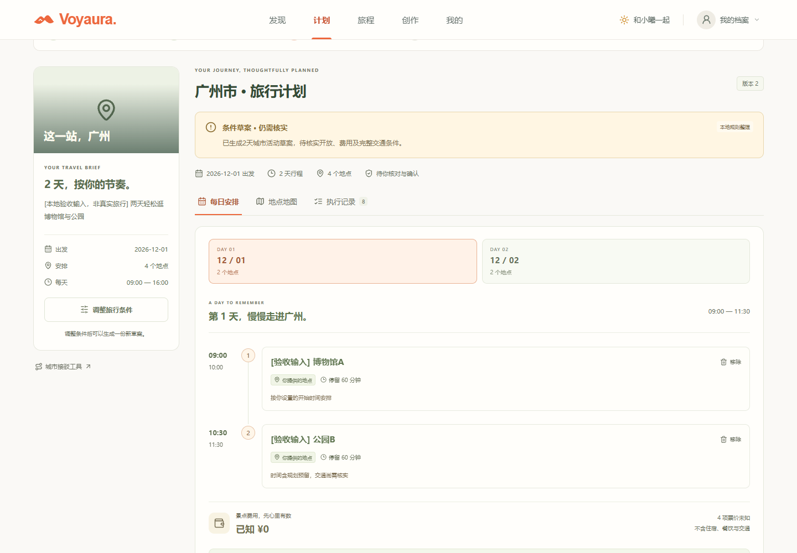
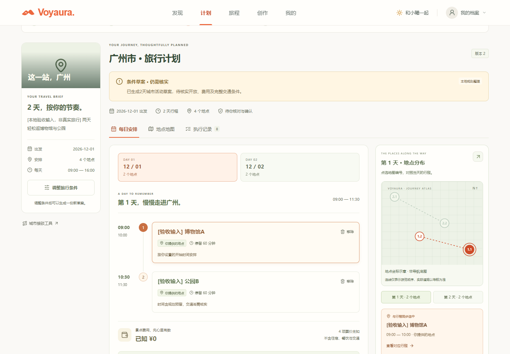
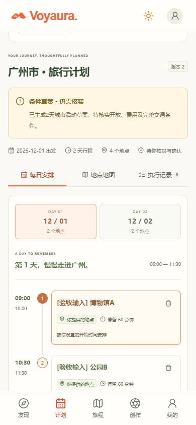

行程与地图，同一眼看清。
沿用方案 A，1280 像素及以上同时查看每日安排和地点地图；手机与窄窗口保持单列。点选地图编号与时间线站点可同步日期和选中状态。
59 项前端测试 · 10 项浏览器场景 · 7 种屏宽通过查看结果页改稿前后
拖动滑杆比较两次真实运行截图，或直接切换到完整的改稿前／改稿后。图中数据均为明确标注的本地验收输入。


改稿后：同屏与地点联动改稿前：单个视图切换
手机

查看同屏断点及其他窗口宽度
1600 同屏 · 1280 同屏 · 1279 切换 · 768 单列 · 320 单列


检查了文档与工作台滚动容器宽度，以及同屏两栏的位置、对齐和间距。每个可见视图只挂载一个地图组件。
这是实际截图审阅页，产品交互请打开真实规划页。缺少地图Key时如实显示“地点坐标示意 · 非导航底图”；本轮未声称完成在线高德／模型验收。保存仍需当前版本摘要与用户主动确认。